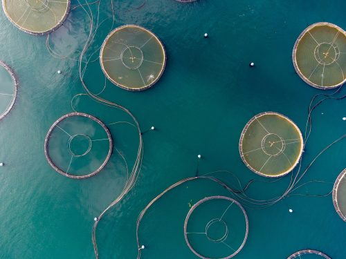

These didn't fit neatly into the trends above: early-stage spaces where the shape of the opportunity (and the risk) is still forming.
Underwater sound carries further and faster than light does, which is why marine life relies on it for almost everything, finding food, mates and migration routes, and why it's an increasingly serious concern for the industry building on top of it. Shipping traffic, seismic surveys and offshore construction have measurably raised background noise in major shipping lanes, with documented effects on whale stress hormones and communication range. The more promising, less reported side is passive acoustic monitoring: hydrophone networks that listen for fish spawning, illegal fishing, and even individual whale calls over huge areas, cheaply and non-invasively compared to visual surveys. A newer, more speculative branch is bioacoustic rewilding, playing recorded reef sounds to attract fish larvae back to degraded coral, with early pilot results but nothing resembling consensus yet on how well or widely it works.
Polymetallic nodules on the Pacific seafloor hold enough cobalt, nickel and manganese to matter to the battery supply chain, and that's exactly the tension: the International Seabed Authority is still finalizing the mining code that would govern extraction in international waters, while a handful of companies are already positioned to move the moment it's approved. The counter-case is that deep-sea ecosystems around these nodules are poorly studied, slow to recover from disturbance on any human timescale, and may turn out to matter more for carbon cycling than currently understood. Several countries and major electronics and auto manufacturers have called for a moratorium until the science catches up; several others want to start now. Neither side has the data to fully settle it yet.
Separate from restoring wetlands or kelp, a newer wave of ventures is engineering the ocean's own chemistry to pull down carbon directly: ocean alkalinity enhancement (adding minerals that let seawater absorb more CO₂), electrochemical approaches that strip carbon from seawater so it can re-absorb more from the air, and macroalgae cultivation designed explicitly for sinking rather than harvest. The appeal is scale, the ocean's capacity dwarfs any land-based removal method, but so is the uncertainty: nobody has settled on measurement standards for how much carbon these methods actually remove, what it does to local marine chemistry, or how permanent the storage really is. This is a space moving on venture timelines well ahead of the regulatory and scientific ones.
Lab-grown seafood, engineered coral probiotics meant to improve heat tolerance, and microbes designed to produce bioplastic precursors are all moving from academic papers into actual startups. The common thread is treating marine biology as a design material rather than something to extract from or protect in isolation, which raises real questions neither biotech nor conservation has fully worked out: how an engineered probiotic behaves once released on a real reef, who owns a genetically modified strain of algae, and whether lab-cultivated seafood actually displaces wild-catch demand or just adds a new product category alongside it.
National and multilateral programs are building real-time digital replicas of ocean systems, combining satellite, sensor and model data into a shared simulation layer. As these commons mature, they could do for ocean governance what open climate data did for emissions accountability: give founders, regulators and researchers a shared source of truth instead of siloed, incompatible datasets.
Marked entries above are original analysis by the Ocean Futures team, written to fill gaps the underlying research hadn't reached yet, not sourced claims. Treat them as a starting hypothesis, not a citation.